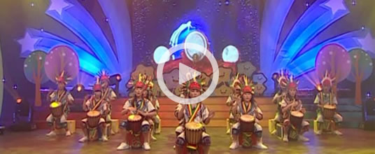

张桂芝
她在山村长大，研究生毕业回到村小支教
从山村一路考入大城市，张桂芝决定返回乡村去。她用自己所学帮助像她一样的孩子走出大山。她面临着是...
查看全部2014年，在潮州团市委的穿针引线下，美丽中国支教项目来到潮州。几年来，项目老师们远离大都市的喧哗，来到偏僻的小山村，吃苦耐劳，默默支教，为广东省潮州市偏僻山村的小学生带来了新颖的教育方法，让仰望山村那一片天的山里孩子，逐渐认识到外面还有一片美丽的大天空、大世界。
美丽中国项目老师的到来，增强了基层学校的师资，不仅是数量上的，还有在所教科目上，都是对项目学校非常大的补充。这两年来，老师们尽心尽力，尽职尽责，充分利用先进教学理念和方法，结合地区学情，创新出了一批优质课堂，取得了丰硕的教育成果。


帮助学校新建/重建图书室 11 个
帮助学校新建/重建班级图书角 97 个，平均每所项目学校5.4个
学校新增藏书 30,000+ 本
可借阅图书的学生人数 4,400+ 人
新增可借阅图书的学生人数 2,100+ 人
项目老师开展各种形式的阅读课 700+ 节
参加阅读课的学生总人次数 25,000+ 人·次
开展学校层面大型“阅读节”活动 13 次
开展阅读拓展活动 150+ 次
参与阅读拓展活动的总人次数 2,600+ 人·次
累计家访学生人次 1613人
累计开展家长会 10所
累计开展家长微信群 16个
累计创办学校公众号 10个
“他们确实把自己当成了学校的一员，并无怨无悔地尽心尽责，每看到这些，我也总是发自内心地感动的。”
“学校开展阅读节活动、建设图书室，让学校的学习氛围更浓厚了，也为我们学校注入了新的活力，对我们学校影响特别大。
“每天图书室关门的时候，我都舍不得走。如今我有胆量去面对很多人，推荐我喜欢的书，这一切都源于阅读。”
“自从学校开展丰富多彩的阅读活动后，孩子变得更爱看书了，视野开阔了，知识更加丰富，懂得了很多道理。”
“他们确实把自己当成了学校的一员，并无怨无悔地尽心尽责，每看到这些，我也总是发自内心地感动的。”
“他们确实把自己当成了学校的一员，并无怨无悔地尽心尽责，每看到这些，我也总是发自内心地感动的。”
“他们确实把自己当成了学校的一员，并无怨无悔地尽心尽责，每看到这些，我也总是发自内心地感动的。”
“他们确实把自己当成了学校的一员，并无怨无悔地尽心尽责，每看到这些，我也总是发自内心地感动的。”


苗田小学学生手鼓队受邀参加在上海举办的CFETS-ICAP慈善日
渔村小学“杨梅合唱团”受邀参加香港晚宴作为唯一表演嘉宾
渔村小学“杨梅合唱团”受邀参加深圳晚宴作为唯一表演嘉宾
项目学校：18个；新增项目老师：29位（2016-2018届）；两届的项目老师总数：50位；分布：10个镇
粤桂陇暑期培训
14-16届项目老师毕业典礼
项目学校：16个 ；新增项目老师：21位（2015-2017届）；两届的项目老师总数：52位；分布：9个镇
2015年广东暑期培训
在潮州团市委和教育局的大力支持下，美丽中国项目2014年8月下旬落户潮州地区。项目学校：13个；项目老师： 31位（2014-2016届）；分布：9个镇
潮州电视台六一节目
美丽中国走进潮州以来，得到了当地政府、团市委、教育局的大力支持，才得以取得如此辉煌的成就。潮州团市委书记陈锦辉书记表示，希望有更多优秀的大学生加入美丽中国支教队伍，让更多农村的孩子受益，更多学校的师资质量得到提高，并且争取将美丽中国纳入广东全省的“希望乡村教师计划”。潮州，潮州，最美便是支教老师！